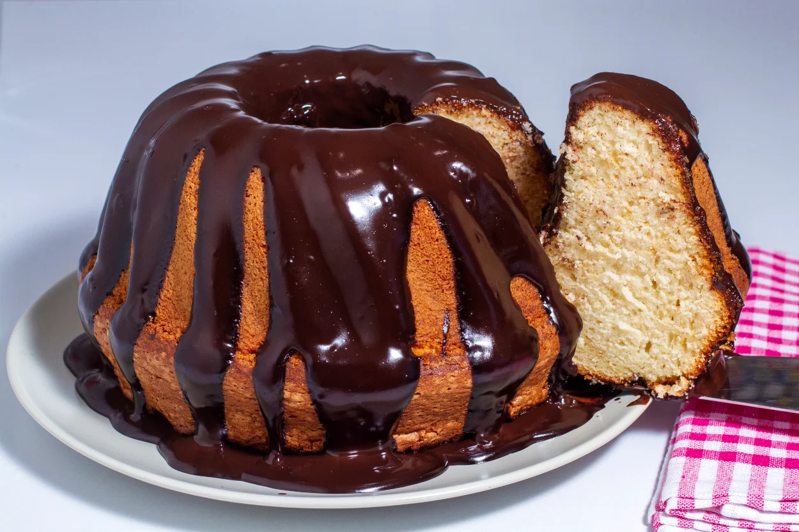

Çikolata Soslu Kek

Çikolata Soslu Sodalı Kek Tarifi İçin Malzemeler
- 3 adet yumurta
- 1 su bardağı şeker
- Yarım su bardağı sıvı yağ
- 1 çay bardağı süt
- 1 çay bardağı soda
- Yarım limon kabuğu rendesi ve suyu
- Aldığı kadar un
- 1 paket kabartma tozu
- 1 paket vanilya
- Çikolata sosu
Çikolata Soslu Sodalı Kek Tarifi Nasıl Yapılır?
- İlk önce, yumurta ve şekeri köpük köpük olana kadar çırpıyoruz.
- Daha sonra sütü ve sodayı katıp, çırpma işlemine devam ediyoruz.
- Limon suyunu kabuğu ve rendelenmiş kabuğunu ve vanilyayı kattıktan sonra, yağını da ekleyip çırpmaya devam ediyoruz.
- En son aldığı kadar unu ve kabartma tozunu ekleyip, tahta bir kaşıkla karıştırmaya devam ediyoruz.
- Yağlanmış kek kalıbına döküp, önceden ısıtılmış 180 derece sıcaklıktaki fırında yaklaşık 20-25 dk pişiriyoruz.
- Kek pişerken, tarifine göre çikolata sosunu hazırlıyoruz
- Kek fırından çıktıktan sonra, hem kekin hem sosun ilk sıcaklığı gittiğinde sosu döküyoruz.
- Buzdolabında beklettikten sonra, servis yapıyoruz.
Afiyet olsun :)